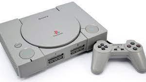

PlayStation 1 (PS1)
The PlayStation 1 revolutionized gaming in the 90s with iconic titles and a new approach to gaming.
- Release Year: 1994
- Top Games: Final Fantasy VII, Metal Gear Solid
- Innovations: CD-ROM format, 3D graphics
PlayStation 2 (PS2)
PS2 became the best-selling game console of all time, offering a wide range of games and multimedia capabilities.
- Release Year: 2000
- Top Games: Grand Theft Auto: San Andreas, Shadow of the Colossus
- Features: DVD playback, vast game library
PlayStation 3 (PS3)
PS3 introduced online gaming through PlayStation Network and Blu-ray disc technology.
- Release Year: 2006
- Top Games: The Last of Us, Uncharted 2
- Capabilities: Blu-ray support, PlayStation Network
PlayStation 4 (PS4)
PS4 focused on player experience with enhanced graphics, social capabilities, and VR support.
- Release Year: 2013
- Top Games: God of War, Spider-Man
- Enhancements: VR support, Share Play
PlayStation 5 (PS5)
PS5 marks the latest in gaming technology with impressive load times, ray tracing, and unique DualSense controller features.
- Release Year: 2020
- Top Games: Demon's Souls, Ratchet & Clank: Rift Apart
- Innovations: Lightning-fast SSD, haptic feedback